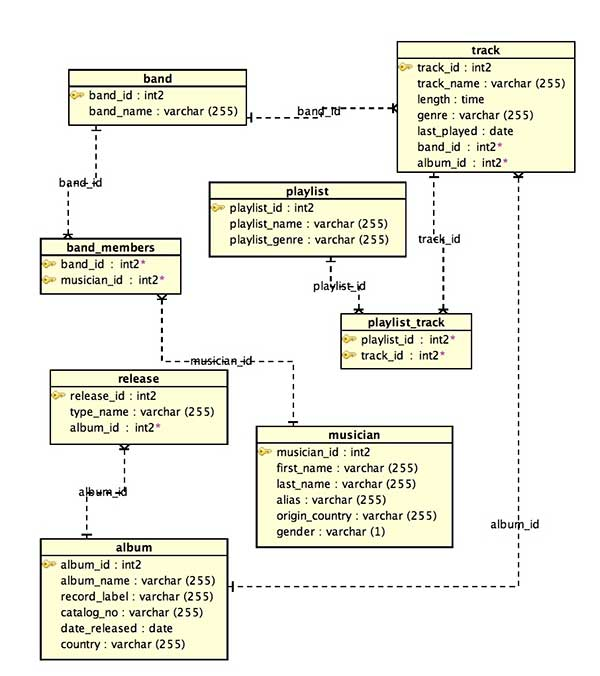
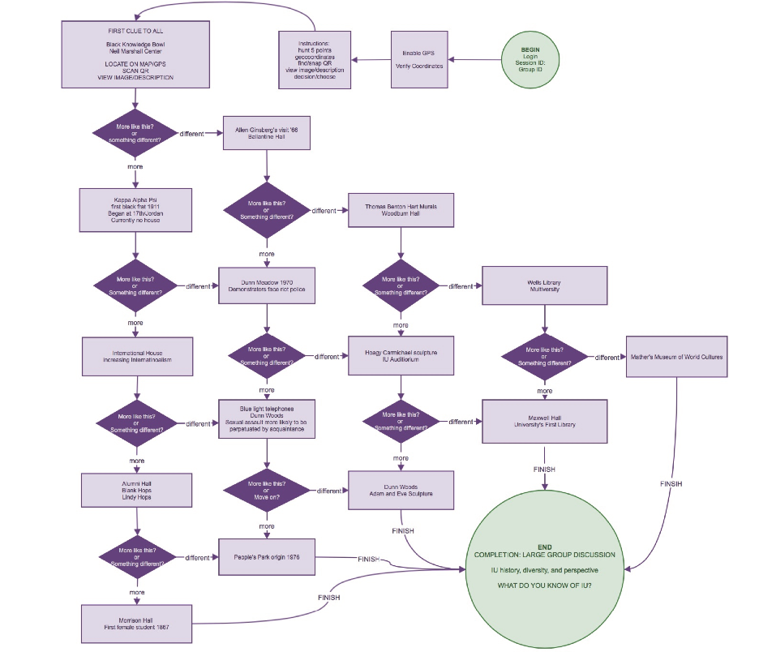
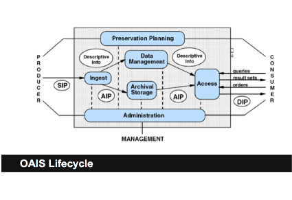
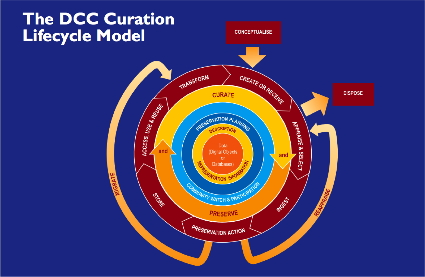

Sites recently built for UITS' Research Technologies Digital Humanities group.
Both involved revising and compiling Javascript and CSS to incorporate IU branding.
This website is in its third iteration, recoded using Bootstrap and LESS files to customize and compile CSS.
Linux, Apache, MySQL, PHP, and Java. Installation and configuration of several server environments.
Command line systems administration of MySQL, PHP, PHPMyAdmin, and other server applications as well as the distributed Andrew File System used by IU's Research File System.
Python programming coursework with the School of Informatics and Computer Science.
Database design and relational modeling with MySQL, PostgreSQL, OracleSQL, and Aqua Data Studio

iTunes metadata model, with PostgreSQLScavenger Hunt phone app designed for Orientation and First-Year Experience programs
Use a live link prototype here

"Do You Know IU?" Content Flowchart
Digital Preservation Plan: Curating and Preparing a Twitter Dataset for a Fedora Repository
 